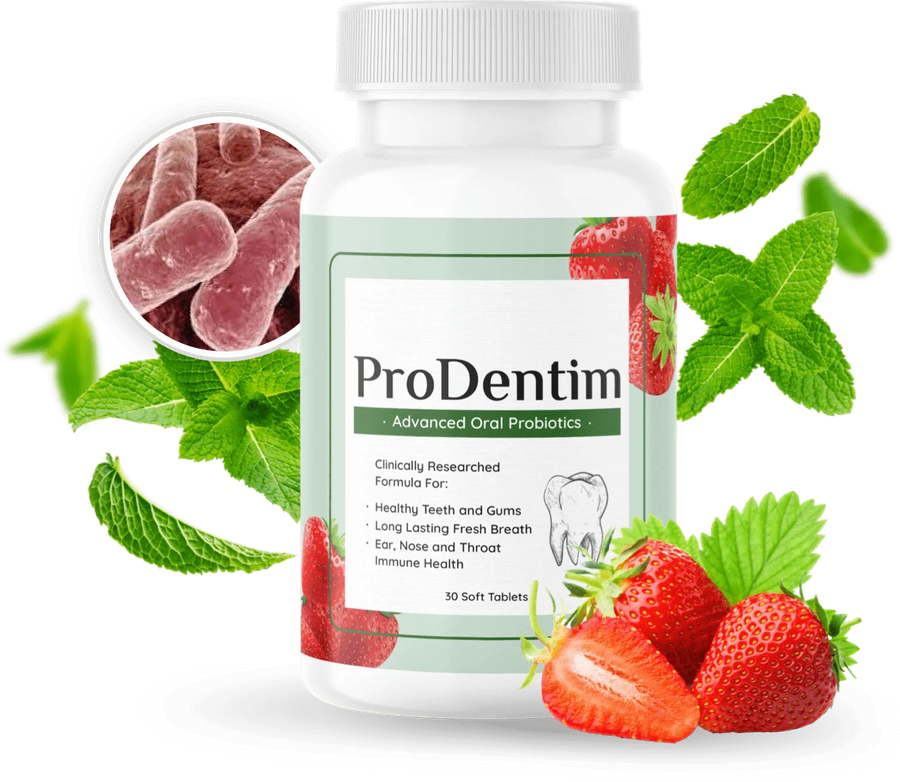

ProDentim Oral Probiotic: Ingredients, Use & Research
The seller describes ProDentim as a daily chewable oral probiotic with three bacterial strains and approximately 3.5 billion CFU. Its public product information does not name those strains; confirm the current ingredients and directions on the package before use.
Independent publisher: This site is not the manufacturer. The ProDentim Editorial Team does not claim clinical or dental credentials. We may earn a commission if you buy through our affiliate links, at no extra cost to you. This information is not medical advice.
Seller FAQ describes 60-day guarantee
Seller describes daily chewable format
Research is ingredient-level
Confirm current label and terms
